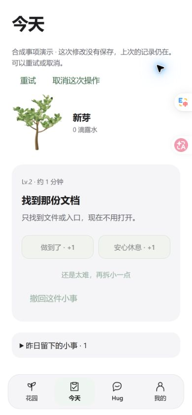

场景与问题
有时想做一点，有时只想被听见
当人精力有限时，建议本身也会增加判断负担。同一句“我最近一直在拖着文档”，可能是在倾诉，也可能是在请求开始的方法。HUG先尊重用户此刻的需要，在必要时澄清一个会影响建议的问题，再决定是否进入行动预览。
这个方向来自个人观察、项目需求与相关研究，真实需求强度和适用人群仍需访谈与任务观察。产品将心灵恢复与良好生活秩序作为目标，内容是否合适、有没有减轻负担和长期效果分别收集证据。
把生活处境和资源条件放进建议里
有目标也可能缺设备、时间、支持或安全空间。建议需要保留这些现实条件，让用户有机会修改、拒绝、暂存或休息。首批文档任务用于验证预览、授权和返回路径，担忧、自我批评、人际与生活安排场景先形成待审内容草稿。
核心路径与功能解释
看懂之后，由自己选择下一步
用户主动请求普通文档建议后，先看到一件小事的预览。可以继续拆小、拒绝或选择休息，明确采纳后才写入Today。采纳后的事项能够找到，未完成时可撤回，完成或记录休息后可撤销对应记录。
三级步骤是可调整的负担估计。打开文档、找到文件入口、先放下休息，都围绕用户原目标与当前条件。休息和拒绝保留可理解的出口，界面反馈跟随实际选择。
让保存结果和用户看到的结果一致
显式浏览器演示保存已采纳的合成事项、露水、最高阶段和操作回执。保存完成后更新成功状态，失败时保留上一份记录，并提供重试和取消。刷新能找回已保存事项，清空后的旧标签页再次写入会遇到版本冲突。
聊天和未采纳建议只在临时会话保留。正式身份、存储与恢复政策、微信和真实设备继续推进。花园布局的保存按对应产品任务独立验收。
温和反馈也需要明确规则
完成和自愿记录休息均获得一份露水反馈，撤销退回对应记录，已经解锁的阶段保留。花园也能独立进入，允许安静停留。后续观察同时关注舒适、感官负担，以及用户是否把反馈理解为额外的打卡压力。
一次使用的目标顺序
表达意图
倾听、行动或休息
预览与拆小
看懂后自主选择
明确采纳
进入 Today，稍后找回
温和反馈
可以撤回或改变主意
任务关系示意，能力与验收范围见图注及当前阶段。

我的取舍与一次修复
旧记录恢复后，用户仍能改变主意
接入保存时，审查发现一类合法旧任务已经完成，却没有奖励回执。撤销逻辑假定回执一定存在，导致用户始终无法重新打开事项。另一处保存映射还会丢掉旧记录的周期、暂停和天气字段。
修复沿现有数据契约处理历史记录，缺回执的完成事项也能撤销，零露水保持正确，支持的旧字段继续保留。定向检查进一步覆盖失败重试与会话过期，避免旧预览重新出现。5项界面回归与独立组合检查通过，9项真实浏览器存储检查覆盖事务、冲突和恢复等行为。

研究与内容组织
把研究转成可审阅的内容条件
当前8张恢复场景卡覆盖担忧与反复思考、自我批评、认知负荷与生活安排、人际连接。每张补充目标行为、情境资源、方法与交付、观察字段，并记录来源与适用边界。BCIO概念用于组织这些字段，专业审核人与有效期仍待确定。
WHO压力管理、行为激活、认知卸载、自我关怀与社会支持研究提供选题和设计依据。不同研究的人群、支持方式、时长与结果需要各自解释。HUG原创短句、三级粒度和数字花草互动的具体效果，继续通过内容评审与实际观察验证。
竞品分析概览
同一次低精力支持，怎样完成表达、选择与返回
统一任务是“表达当前状态，自主决定要不要行动，并在稍后找回自己接受的小事”。比较Finch、How We Feel和通用聊天加待办工作流。下列为2026年11月11日官方资料研究与本项目记录，客户端具体体验、版本条件和真实效果待同任务比较。
| 比较问题 | 现有方案的能力 | HUG要验证的价值 |
|---|---|---|
| 需要表达和理解情绪 | How We Feel提供情绪记录与回顾，官方资料也有可选AI功能 | 意图判断与必要澄清能否贴合这一次需要 |
| 希望照顾自己并尝试行动 | Finch提供自我关怀目标与成长反馈 | 可拆小、可拒绝、可休息的预览是否减少决定负担 |
| 建议怎样进入计划 | 用户可以在现有工具中组织目标，通用聊天与待办也能组合使用 | 从明确采纳到Today和撤回是否衔接清楚 |
| 过一会儿回来继续 | 成熟产品已有各自记录和账户机制，失败恢复需实际比较 | 当前合成浏览器恢复能否支持连续使用，正式保存方案如何进一步完善 |
Finch已有成长反馈，How We Feel已有可选AI功能。HUG的差异化假设放在用户意图、可承受的小行动、反悔和花草陪伴的连贯体验上。下一轮比较关注理解、修改负担、返回与自主选择，再结合真实反馈决定投入。
运营与评价
先确认有没有帮到这一次需要
首次体验分别观察倾听、行动和休息。行动采纳率以主动想行动、且看到有效预览的人为范围，同时保留修改与拒绝原因。倾听和休息观察是否符合意图、是否增加负担。回访结合参与者是否有再次使用机会，以及愿意或不愿继续的具体理由。
质量记录按需求理解、资源适配、内容、生成、授权、存储和界面归因。发现失败后，先判断需要改内容、提示、模型还是流程，再回到原例和留出样本检查。调用成本、延迟和内容审核工时与体验结果一起记录。
职责、证据与后续
我负责低精力参与、微行动、休息和拒绝、花园反馈等产品方向与规则判断，借助AI推进研究整理、原型迭代和检查。案例展示具体取舍、失败与修订，说明产品如何逐步支持一次完整使用。
本轮工作区297项、页面77项、场景/服务30项、UI集成5项和Chrome原生存储9项检查通过。当前证据支持合成原型与相应工程规则。下一阶段继续明确正式存储与恢复政策，完成内容专业审核与真实模型评测，再开展自愿任务观察，记录修改负担和再次使用理由。
当前证据与下一步
显式浏览器入口中的普通合成事项已能保存、刷新找回与撤回，保存失败提供重试和取消。8 张恢复场景卡仍为 draft_unreviewed。正式存储与恢复政策、微信和真机、真实模型、专业审核及真实用户效果继续待验证。
工程验收范围与代码审阅说明
截至 2026-11-11，Chrome 原生存储 9 项、UI 集成 5 项、DOM 77 项、工作区 297 项及场景/服务 30 项通过。私有补丁 ce341c70 用于保全当前改动，完整可检出工程分支仍待整合。
页面中的图片与摘要可直接阅读。私有代码及详细材料可按需审阅。
事实截至 2026 年 11 月 11 日。真实用户收益、增长与收入按后续观察记录。